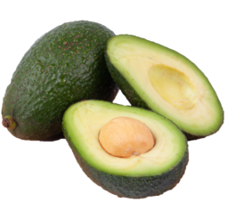

SOEN 287 project
ONLINE SHOPPING CART
Home / Online / Grocery / Aisle / Fruits / Avocado
Avocado

Avocado
$1.65 /un.
Read more
The avocado is a fruit sought for its good taste and its versatility. It can be eaten in a thousand ways! However, it has the bad reputation of containing a lot of calories and fat. If consumed in moderation, these fatty acids are excellent for your health since they are "good fats". Rich in fibre, avocados also help us stay fuller longer. Avoid a fruit that is too soft or has withered skin. They are probably overripe. We all know the famous guacamole. This avocado puree is always popular in the summer.
add to cart